دکتر مسعود گوهری منش
دانشیار گروه مهندسی مکانیک — دانشگاه تربت حیدریه
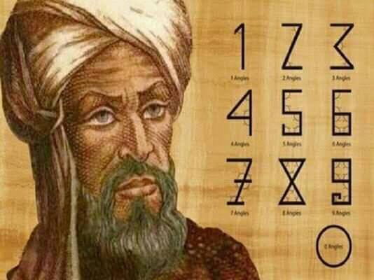
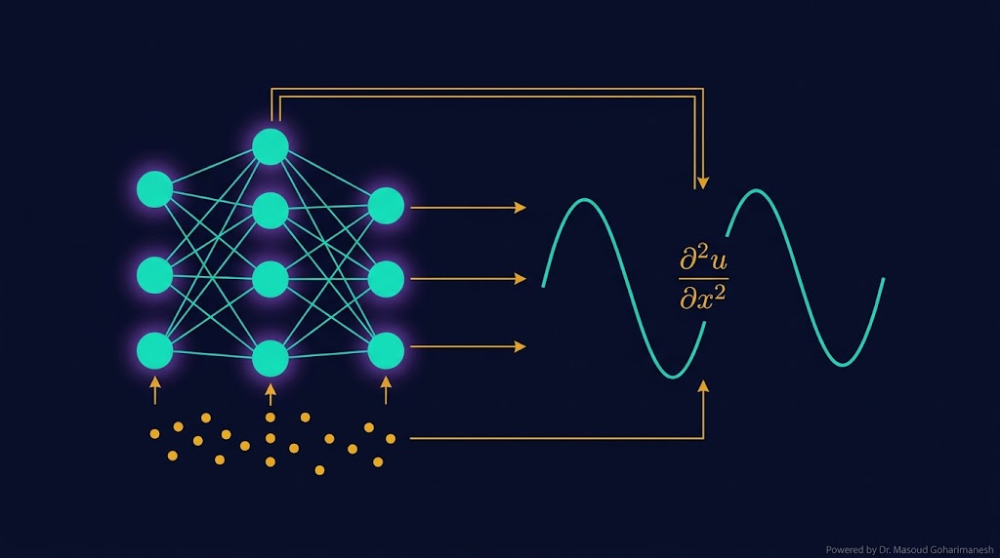
(Physics-Informed Neural Networks) — جلسه ۱۹
دکتر مسعود گوهری منش
دانشیار گروه مهندسی مکانیک — دانشگاه تربت حیدریه
تا امروز، دو دنیای جدا داشتیم: روشهای عددی (FD، FEM) که فیزیک را میشناسند اما داده ندارند، و یادگیری ماشین که داده دارد اما فیزیک را نمیشناسد. PINN این دو را به هم پیوند میزند — یک انقلاب در مدلسازی علمی.
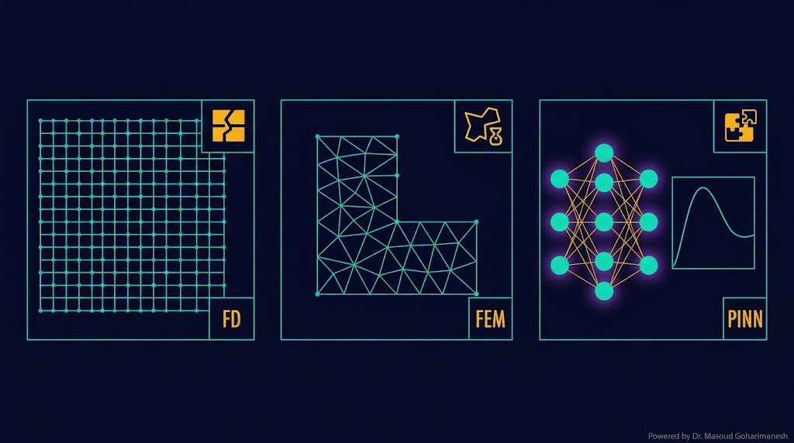
روشهای عددی سنتی (FD، FEM) محدودیتهای جدی دارند:
نیاز به شبکهبندی — برای هندسه پیچیده سخت
حل مکرر PDE گران است
نمیتوانند از دادههای تجربی استفاده کنند
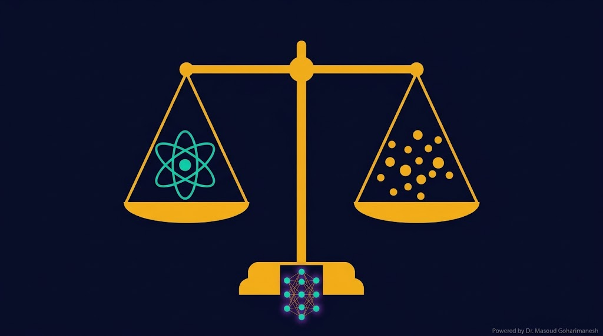
PINN یک شبکه عصبی است که بهجای یادگیری صرف از داده، از فیزیک مسئله هم یاد میگیرد:
$\mathcal{N}_\theta$ = شبکه عصبی با پارامترهای $\theta$
اما چه چیزی شبکه را مجبور میکند که فیزیک را رعایت کند؟ Loss فیزیکی!
PDE
Measurements
BC/IC
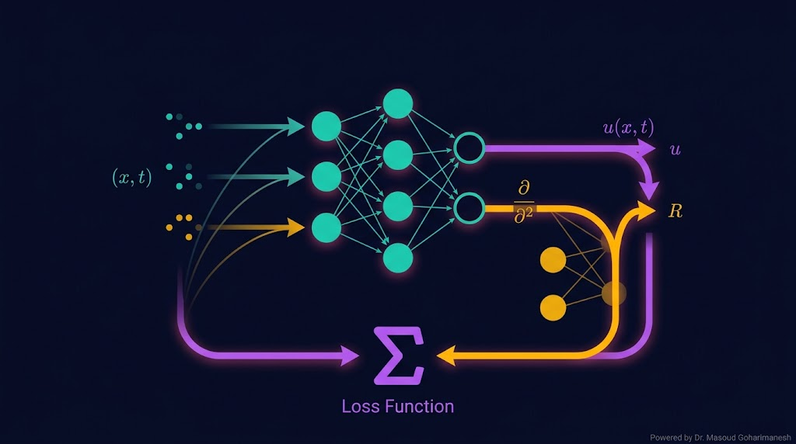
مختصات فضایی-زمانی: $(x، t)$
چند لایه با فعالسازی غیرخطی (Tanh، SiLU، GELU) برای پیوستگی مشتقات
جواب تقریبی PDE — سپس مشتقات با AutoDiff محاسبه میشوند
محاسبه PDE Residual و ترکیب سه Loss: داده، فیزیک، مرزی
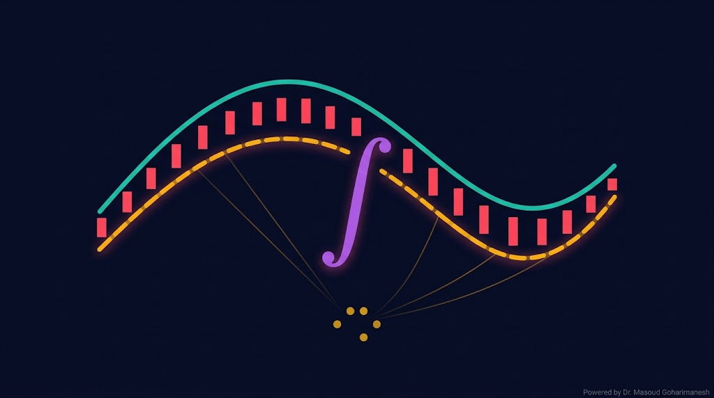
مهمترین بخش PINN! این Loss، شبکه را مجبور میکند که PDE را ارضا کند:
$\mathcal{N}$ = عملگر PDE | $N_f$ = تعداد نقاط collocation
مثال: معادله گرما $\frac{\partial u}{\partial t} = \alpha \frac{\partial^2 u}{\partial x^2}$
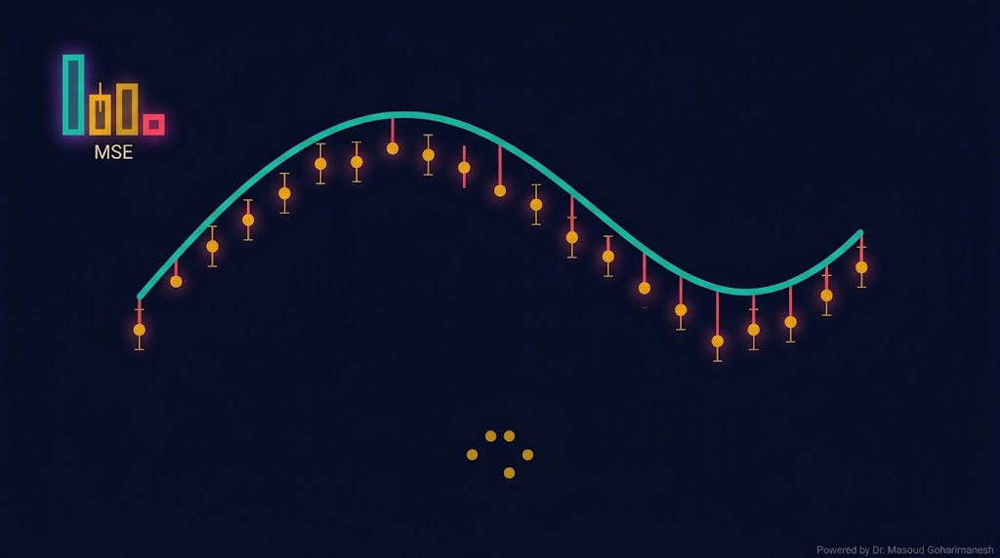
این Loss، شبکه را مجبور میکند که با دادههای تجربی سازگار باشد:
$u_i^{obs}$ = مقدار مشاهدهشده در نقطه $(x_i، t_i)$
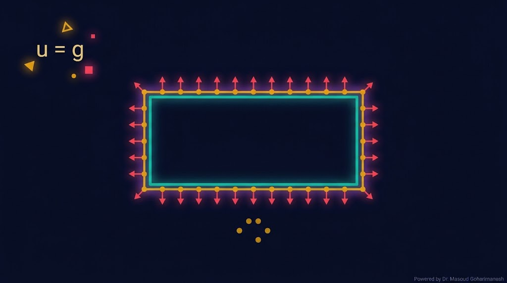
این Loss، شبکه را مجبور میکند که شرایط مرزی و اولیه را ارضا کند:
$\mathcal{B}$ = عملگر شرط مرزی | $g$ = مقدار مرزی معلوم
$u = g$
$\partial u/\partial n = g$
$u + \partial u/\partial n = g$
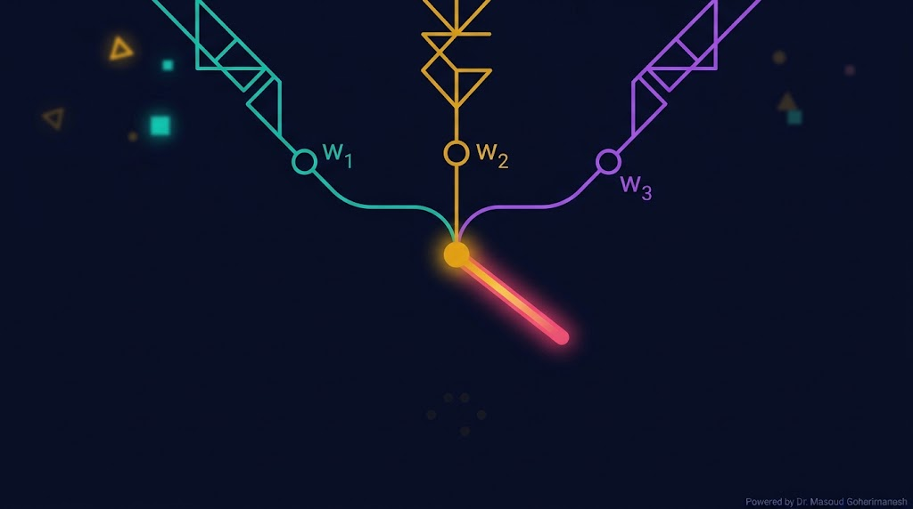
Loss کل، ترکیب وزندار سه Loss است که شبکه باید کمینه کند:
$\lambda_i$ = وزن هر Loss — تعیینکنندهی اهمیت نسبی
$\lambda_{data}$ کوچک — تمرکز روی PDE
$\lambda_{data}$ بزرگ — تمرکز روی داده
$\lambda_{pde} \sim 1$، $\lambda_{data} \sim 1$ — عمومی
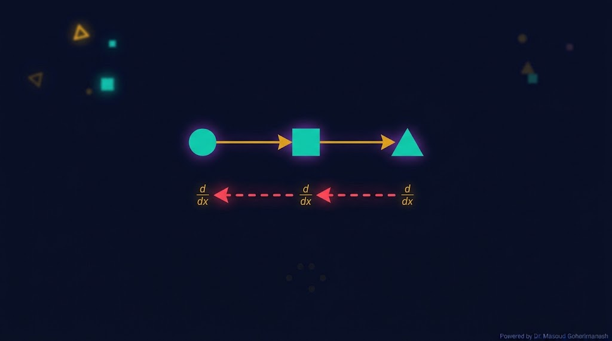
AutoDiff یک تکنیک محاسباتی است که مشتقات دقیق را با استفاده از زنجیرهی محاسباتی محاسبه میکند — بدون تقریب عددی:
تقریب با تفاضل — $O(h)$
دقیق ولی کند
دقیق و سریع ✓
torch.autograd مشتقات را بهطور خودکار محاسبه میکند. فقط کافی است requires_grad=True تنظیم شود.
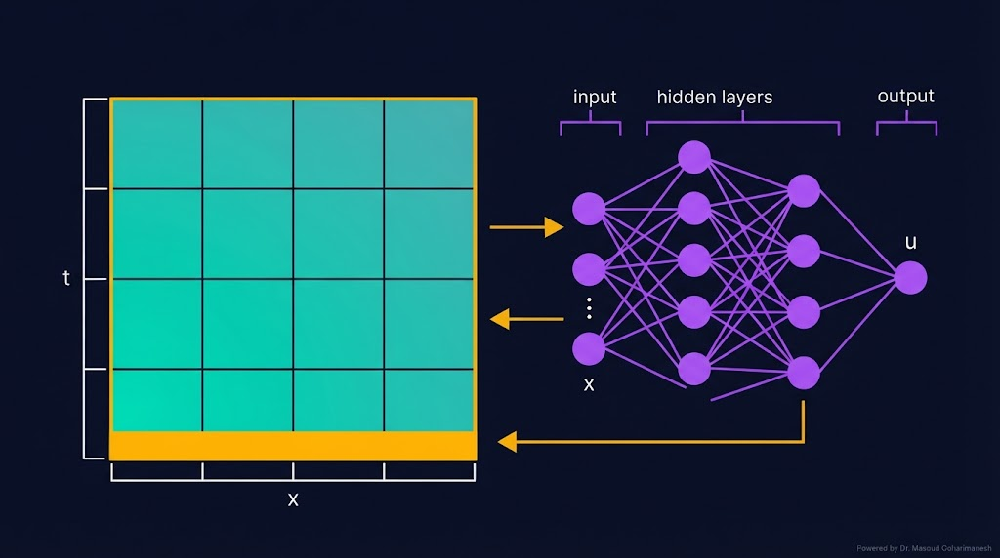
در مسئله مستقیم، تمام پارامترها معلوماند و ما فقط میخواهیم جواب PDE را پیدا کنیم:
بدون داده تجربی — فقط فیزیک!
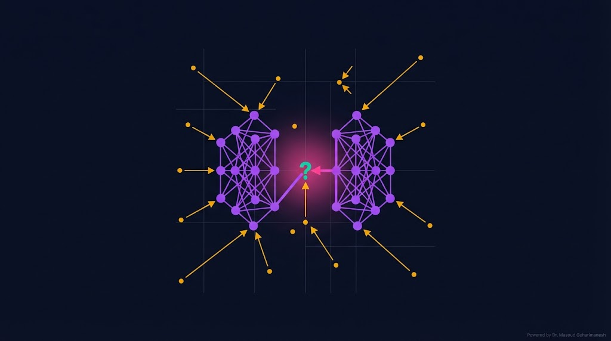
در مسئله معکوس، برخی پارامترهای PDE نامعلوم هستند و باید از دادهها تخمین زده شوند:
چند نقطه از اندازهگیری $u^{obs}(x_i، t_i)$ داریم.
α بهعنوان پارامتر قابل آموزش در نظر گرفته میشود.
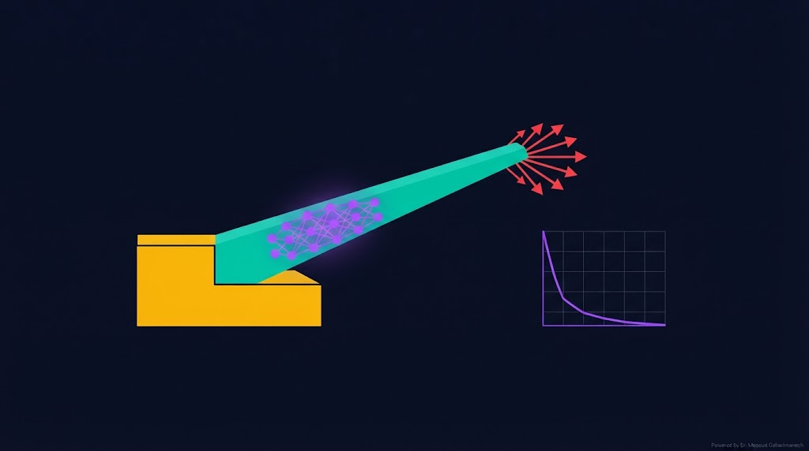
معادله نانو انبرک، یک PDE غیرخطی است که با روشهای عددی گران حل میشود. PINN این مشکل را حل میکند:
پیشبینی خمش $w(x)$ برای پارامترهای معلوم
تخمین $\alpha$، $\beta$، $\gamma$ از دادههای خمش
پیشبینی دقیق ولتاژ Pull-in
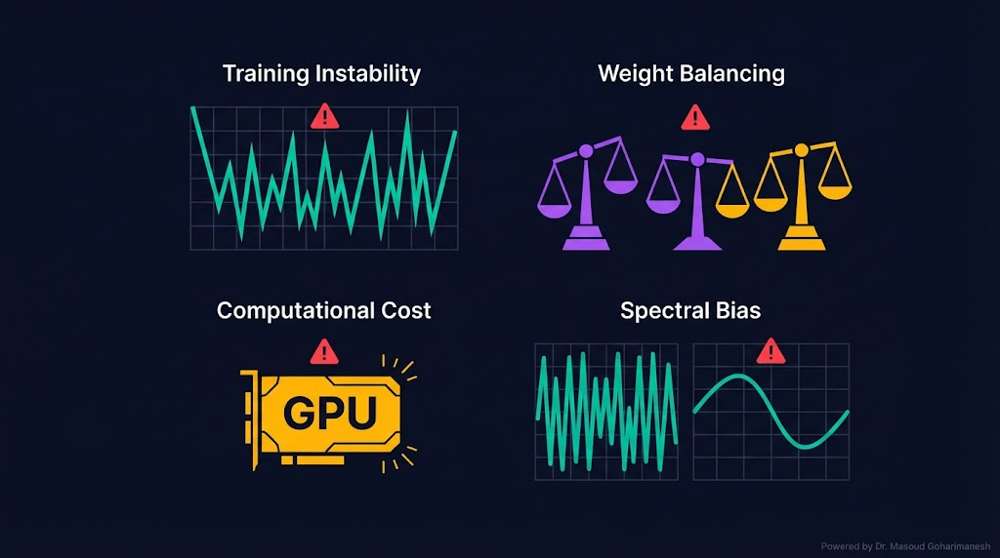
# ============================================ # PINN for 1D Heat Equation (NumPy) # ============================================ import numpy as np # --- معماری شبکه --- def init_params(n_in=2, n_h=32, n_out=1): return { 'W1': np.random.randn(n_in, n_h) * 0.1, 'b1': np.zeros(n_h), 'W2': np.random.randn(n_h, n_h) * 0.1, 'b2': np.zeros(n_h), 'W3': np.random.randn(n_h, n_out) * 0.1, 'b3': np.zeros(n_out), } # --- Forward (فقط خروجی شبکه) --- def u_net(x, t, params): inp = np.stack([x, t], axis=-1) z1 = inp @ params['W1'] + params['b1'] a1 = np.tanh(z1) z2 = a1 @ params['W2'] + params['b2'] a2 = np.tanh(z2) z3 = a2 @ params['W3'] + params['b3'] return z3.flatten() # --- محاسبه PDE Residual (با AutoDiff عددی برای آموزش) --- def pde_residual(x, t, params, alpha=0.1, h=1e-4): u = u_net(x, t, params) # گرادیانهای عددی u_t = (u_net(x, t + h, params) - u_net(x, t - h, params)) / (2 * h) u_xx = (u_net(x + h, t, params) - 2 * u + u_net(x - h, t, params)) / (h * h) return u_t - alpha * u_xx # --- نقاط آموزشی --- n_f = 500 n_bc = 100 n_ic = 100 x_f = np.random.rand(n_f) t_f = np.random.rand(n_f) x_bc = np.concatenate([np.zeros(n_bc), np.ones(n_bc)]) t_bc = np.random.rand(2 * n_bc) x_ic = np.random.rand(n_ic) t_ic = np.zeros(n_ic) params = init_params() lr = 0.001 for epoch in range(1000): # PDE loss res = pde_residual(x_f, t_f, params) loss_pde = np.mean(res**2) # BC loss (u=0 در مرز) u_bc = u_net(x_bc, t_bc, params) loss_bc = np.mean(u_bc**2) # IC loss (u=sin(pi*x) در t=0) u_ic = u_net(x_ic, t_ic, params) loss_ic = np.mean((u_ic - np.sin(np.pi * x_ic))**2) loss = loss_pde + loss_bc + loss_ic if epoch % 100 == 0: print(f'Epoch {epoch}: Loss={loss:.6f}') # Backprop (بهصورت ساده برای نمایش) # در عمل از optimizer.full استفاده میشود print('Training complete!')
# ============================================ # PINN for 1D Heat Equation (PyTorch) # ============================================ import torch import torch.nn as nn import numpy as np # --- شبکه PINN --- class PINN(nn.Module): def __init__(self): super().__init__() self.net = nn.Sequential( nn.Linear(2, 32), nn.Tanh(), nn.Linear(32, 32), nn.Tanh(), nn.Linear(32, 1) ) def forward(self, x, t): inp = torch.cat([x, t], dim=1) return self.net(inp) model = PINN() optimizer = torch.optim.Adam(model.parameters(), lr=1e-3) # --- داده آموزشی --- alpha = 0.1 n_f = 500 x_f = torch.rand(n_f, 1, requires_grad=True) t_f = torch.rand(n_f, 1, requires_grad=True) # BC: u(0,t) = u(1,t) = 0 t_bc = torch.rand(100, 1) x_bc_0 = torch.zeros(100, 1) x_bc_1 = torch.ones(100, 1) # IC: u(x,0) = sin(pi*x) x_ic = torch.rand(100, 1) t_ic = torch.zeros(100, 1) u_ic_target = torch.sin(np.pi * x_ic) # --- آموزش --- for epoch in range(5000): # Forward u = model(x_f, t_f) # AutoDiff — مشتقات دقیق u_t = torch.autograd.grad(u, t_f, grad_outputs=torch.ones_like(u), create_graph=True)[0] u_x = torch.autograd.grad(u, x_f, grad_outputs=torch.ones_like(u), create_graph=True)[0] u_xx = torch.autograd.grad(u_x, x_f, grad_outputs=torch.ones_like(u_x), create_graph=True)[0] # PDE residual residual = u_t - alpha * u_xx loss_pde = torch.mean(residual**2) # BC loss u_bc_0 = model(x_bc_0, t_bc) u_bc_1 = model(x_bc_1, t_bc) loss_bc = torch.mean(u_bc_0**2) + torch.mean(u_bc_1**2) # IC loss u_ic_pred = model(x_ic, t_ic) loss_ic = torch.mean((u_ic_pred - u_ic_target)**2) # Total loss loss = loss_pde + loss_bc + loss_ic # Backprop optimizer.zero_grad() loss.backward() optimizer.step() if epoch % 500 == 0: print(f'Epoch {epoch}: Loss={loss.item():.6f}') print('Training complete!')
ارسال تمرینها:
m.goharimanesh@gmail.com
Subject الزامی:
[Advanced Engineering Mathematics] HW19 - نام و نام خانوادگی - شماره دانشجویی
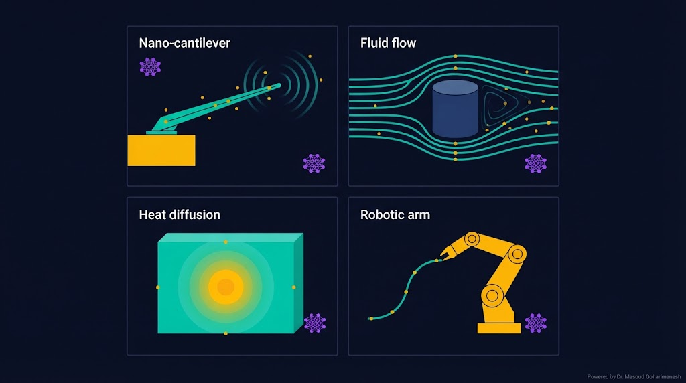
امروز فیزیک و یادگیری ماشین را در یک چارچوب واحد ترکیب کردید! 🌟
Loss کل PINN — ترکیب سه دنیا
پیادهسازی PINN در PyTorch
دکتر مسعود گوهری منش
دانشیار گروه مهندسی مکانیک — دانشگاه تربت حیدریه
🇮🇷 با افتخار برای دانشجویان مکاترونیک 🇮🇷
PINN (Physics-Informed Neural Networks) در سال ۲۰۱۹ توسط Raissi، Perdikaris و Karniadakis در مقاله معروفشان در Journal of Computational Physics معرفی شد. این ایده، انقلابی در حل PDE با یادگیری عمیق ایجاد کرد.
خوارزمی در کتاب «الجبر و المقابله» مفهوم الگوریتم را برای حل معادلات معرفی کرد. PINN نیز یک الگوریتم ترکیبی است:
این ساختار، دقیقاً همان الگوریتم گامبهگام است که خوارزمی برای حل معادلات معرفی کرد — با ابزارهای مدرن.
همانطور که خوارزمی الگوریتم را برای حل معادلات ابداع کرد، PINN الگوریتم جدیدی برای حل PDE با استفاده از شبکههای عصبی است. کلمه Algorithm از نام او (Al-Khwarizmi) گرفته شده و امروز، هر الگوریتم یادگیری ماشین، وارث این سنت است.